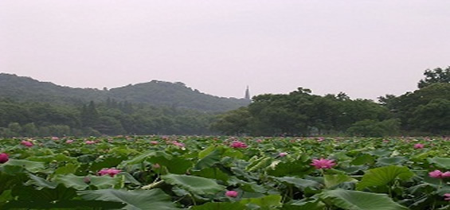

为充分发挥公交客运服务的优势，针对休博会主题馆和产业馆分设在白马湖动漫广场、萧山区湘湖休博园的特点，从9月16日起到杭州休博会结束，公交集团开通十条免费专线（凭门票免费乘坐），方便广大市民游客前往参观。这十条线路具体为：
（一）白马湖主题馆配套免费专线（凭门票免费乘坐）
951路专线，星光大道南口至白马湖主题馆。休博会期间每逢双休日、法定节假日开通。
952路专线，萧山城北停车场至白马湖主题馆。休博会期间每逢双休日、法定节假日开通。
（根据滨江区内自驾车停车场的设置，开通停车场至白马湖主题馆的换乘专线2条。）
981路专线，保俶路至长河公交站（白马湖主题馆）。休博会期间开通。
982路专线，黄龙体育中心至白马湖主题馆。休博会期间每逢双休日、法定节假日开通。
983路专线，庆春广场至白马湖主题馆。休博会期间每逢双休日、法定节假日开通。
984路专线，西城广场至白马湖主题馆。休博会期间每逢双休日、法定节假日开通。
（二）休博园产业馆配套免费专线（凭门票免费乘坐）
1、985路专线，黄龙体育中心至休博园产业馆。线路走向为：黄龙体育中心始发，经南通道、求是路、曙光路、黄龙路、天目山路、环城北路、中河立交、中河高架、复兴大桥、时代大道高架、滨康路、风情大道至休博园。沿途停靠轮船码头（开往休博园方向）、杭州大厦（开往黄龙体育中心方向）2只单向停靠站。
休博会期间每逢节展期间（9月16日至9月19日，9月23日至9月26日，10月4日至10月7日，10月21日至10月23日，10月27日至10月31日，11月5日至11月8日，11月17日至11月20日）及法定节假日营运。首末班时间：黄龙体育中心为8：00-15：00，白马湖主题馆为9：30-17：30。
2、955路专线，长河公交站（白马湖主题馆）至休博园产业馆。线路走向为：长河公交站始发，经长江南路、越王路、湘湖路、风情大道至休博园产业馆。休博会期间营运。首末班时间：长河公交站为9：30-18：00，白马湖主题馆为9：00-17：30。
市民游客可通过拨打公交服务热线85191122，或登陆杭州公交网、杭州公交官方微博，了解、咨询相关出行信息。

温馨提示：
为了丰富参展形式，方便市民线上参与休博会，以主园区休闲体验为核心，E都市与休博组委会共同历时1年建设开发的“网上休博会”也正式上线了。市民可通过在线注册，成为休博园“游客”，注册游客可在模拟的主园区3D导览图中进行休闲体验。同时，游客可以在网络上进行展馆预约、网购门票、网购休博会特许商品等线上活动。